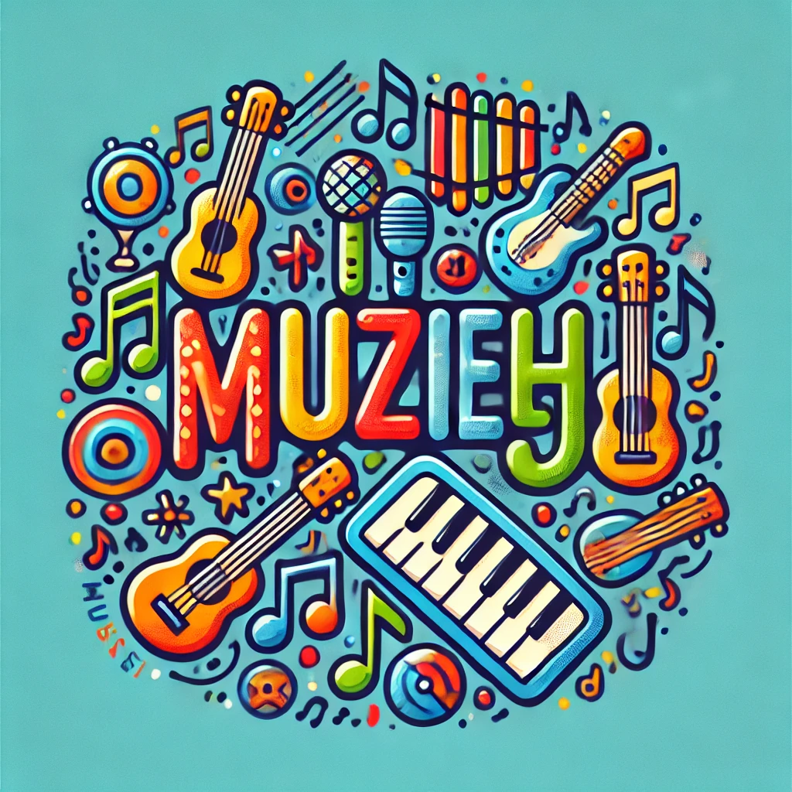

Bij MuzieHJ maken we muziek toegankelijk voor iedereen. Ons assortiment bevat kindvriendelijke instrumenten zoals:
Onze producten zijn speciaal ontworpen voor kleine handjes en beginners, zodat kinderen met plezier kunnen leren. Zie jij je kind al helemaal rocken op een leuk instrument? Bij muzieHJ vind je gauw een gepast instrument voor jouw kind. koop snel bij MuzieHJ en geniet van uw muzikale kind!
Muziek maken is meer dan alleen een hobby. Het leren bespelen van een instrument helpt bij de cognitieve, emotionele en sociale ontwikkeling van kinderen. Bij MuzieHJ geloven we in de kracht van muziek om kinderen te inspireren. Daarom bieden wij speciaal ontworpen kinderinstrumenten aan die leren leuk en toegankelijk maken.
Muziek maken stimuleert de hersenen op unieke manieren. Het verbindt creativiteit met logisch denken, terwijl het geheugen en concentratie verbetert. Studies tonen aan dat kinderen die muziek maken vaak beter presteren op school. Het leren van ritmes en tonen bevordert zelfs vaardigheden in wiskunde en taal.
Het leren van een instrument vraagt oefening, wat geduld en discipline aanleert. Kinderen ontdekken dat doorzettingsvermogen loont. De trots die ze voelen wanneer ze een liedje kunnen spelen, geeft hen zelfvertrouwen dat verder reikt dan muziek.
Muziek is vaak een groepsactiviteit. Of het nu in een orkest, band of met vrienden is, samen spelen leert kinderen samenwerken en luisteren naar anderen. Dit versterkt hun sociale vaardigheden en leert hen hoe ze een teamspeler kunnen zijn.
Spelen op een instrument helpt kinderen ontspannen en hun emoties te uiten. Muziek maken biedt een creatieve uitlaatklep en brengt rust in een druk leven.